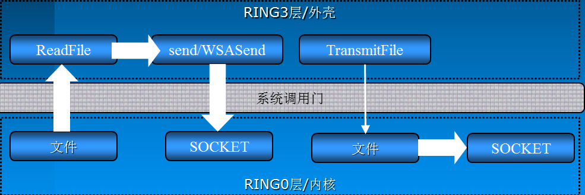

WinSock中提供的5种网络模型已经可以做到很高效了，特别是完成端口，它的高效的原因在于它不仅另外开启了线程来处理完成通知而不是占用主程序的时间，同时也在于我们在完成端口中运用了大量异步IO处理函数。比如WSASend、WSARecv等等。为了高效的处理网络IO，WinSock提供了大量这样的异步函数。这篇博文主要探讨这些函数的用法和他们与传统的巴克利套接字相比更加高效的秘密
AcceptEx
其实在使用TCP协议编程时，接受连接的过程也是需要进行收发包操作的，具体的过程请参考TCP的三次握手。针对这种特性WinSock提供了对应的异步操作函数AcceptEx。函数原型如下:
1 | BOOL AcceptEx( |
sListenSocket: 监听套接字
sAcceptSocket：该参数是一个SOCKET的句柄，一旦连接成功建立，那么会使用该SOCKET作为通信的SOCKET
lpOutputBuffer：是三个数据一体化的缓冲区的指针，这三个数据分别是接收连接时顺带接收客户端发过来的数据的缓冲，之后是本地地址结构的缓冲，最后是远程客户端地址结构的指针
dwReceiveDataLength：是lpOutputBuffer的缓冲长度
dwLocalAddressLength：是本地地址结构长度,其值等于sizeof(SOCKADDR)+16
dwRemoteAddressLength：是远程客户端地址结构长度,其值也等于sizeof(SOCKADDR)+16
lpdwBytesReceived：该参数用于返回接受连接请求时接收的数据的长度
lpOverlapped：就是重叠I/O需要的结构
第一个参数是一个十分重要的参数，这个参数是AcceptEx比较高效的一个重要的原因。从功能上来看它与传统的accept函数并没有什么区别，都是接受客户端连接的。它与accpet相比比较高效的原因如下：
- 从内部机理来说
accpet在内部其实有一个创建SOCKET的操作，当函数成功后会返回这个SOCKET，所以AcceptEx与accept相比少了一个创建SOCKET的操作，它的功能更加纯粹，这就给了我们一个启示：我们可以在初始化的时候创建大量的SOCKET，并投递到AcceptEx中，这样在接受连接时省去了创建SOCKET的时间，能够更快速的响应客户端的连接。 - 由于
AcceptEx不用创建SOCKET，所以它也将accept内部对socket设置的操作给省去了，也少了一些其他的附带操作，比如地址的解析，其实这里我们可以简单的理解为lpOutputBuffer中保存的信息就是TCP三次握手中的SYN包和ACK包，这些包的信息需要在函数返回后由用户通过其他方法来解析，而accpet帮我们解析了，所以AcceptEx比accept更加高效
因为AcceptEx的设计目标纯粹就是为了性能,所以监听套接字的属性不会被代表客户端通讯的套接字自动继承。要继承属性(包括socket内部接受/发送缓存大小等等)就必须调用setsockopt使用选项SO_UPDATE_ACCEPT_CONTEXT,如下:
1 | int nRet = ::setsockopt(skClient, SOL_SOCKET ,SO_UPDATE_ACCEPT_CONTEXT ,(char *)&skListen, sizeof(skListen)); |
AcceptEx函数除了能够接受客户端的连接之外，它也可以在接受连接的同时接收客户端随着连接请求一块发过来的数据，只要我们设置dwReceiveDataLength 参数大于0，并在lpOutputBuffer中分配相应的缓冲即可，但是这里会存在一个安全问题，当我们设置了这些之后，如果客户端只发送连接请求，但是不发送数据，AcceptEx会一直等待，如果有大量这样的客户端，那么可能会给服务器造成大量的资源浪费从而不能及时的服务其他正常客户端。要防止这样的情况，可以采用下列措施：
- 设置
dwReceiveDataLength为0，并且不分配对应的缓冲，也就是关闭这个接收数据的功能。 - 启动一个监视线程对用于连接的SOCKET轮询调用：iSecs 为 -1 表示还未建立连接, 否则就是已经连接的时间.
1
2
3int iSecs;
int iBytes = sizeof( int );
getsockopt( hAcceptSocket, SOL_SOCKET, SO_CONNECT_TIME, (char *)&iSecs, &iBytes ); //获取SOCKET连接时间
当iSecs超过某个筏值时,就果断断开这个连接
GetAcceptExSockAddr
前面说AcceptEx不会对地址进行解析，而是返回一个经过编码的地址信息，可以将它理解为原始的三次握手包。而函数GetAcceptExSockAddr的主要作用就是通过原始的二进制数据得到对应的地址结构。函数原型如下:
1 | void GetAcceptExSockaddrs( |
lpOutputBuffer:之前提供给AcceptEx函数的缓冲，如果AcceptEx调用成功，会在这个缓冲中写入地址信息，GetAcceptExSockaddrs通过这个缓冲中保存的地址信息来解析出地址结构
dwReceiveDataLength：接收到的数据长度，注意这个长度不是lpOutputBuffer，而是客户端随着连接请求一起发送过来的其他数据的长度，其实这里应该理解为地址信息在缓冲中的偏移
dwLocalAddressLength：本地地址信息的长度，这个长度为sizeof(SOCKADDR)+16
dwRemoteAddressLength：远程客户端的地址信息的长度，长度为sizeof(SOCKADDR)+16
LocalSockaddr：解析出来的本地地址结构
LocalSockaddrLength:本地地址结构的长度，这个参数是一个输出参数
RemoteSockaddr: 解析出来的远程客户端的地址结构
RemoteSockaddrLength：解析出来的远程客户端的地址长度，这个参数是一个输出参数
这里为什么要返回本地的地址结构呢，主要有两个原因：
- 一般的服务器可能有多块网卡，返回本地地址我们就可以知道服务器用哪块网卡与客户端通信
- 服务器用来监听的端口与用来进行通信的端口不是同一个，返回本地地址我们就能够知道服务器在使用哪个端口与客户端通信
TransmitFile
对于一些网络应用来说,发送文件有时是一个基本的功能,比如:web服务,FTP服务等。在Winsock中为此而专门提供了一个高效传输文件的API——TransmitFile。函数原型如下:
1 | BOOL TransmitFile( |
这个函数主要工作在TCP协议上
hSocket：与客户端进行通信的SOCKET
hFile：是对应文件的句柄
nNumberOfBytesToWrite：表示发送文件的长度，这个长度可以小于文件长度
nNumberOfBytesPerSend：当文件较大时，可以进行拆包发送，这个参数表示每个数据包的大小，如果这个参数为0，将采用系统默认的包大小，NT内核中默认大小为64K
lpOverlapped：重叠I/O需要的结构
lpTransmitBuffers：是一个TRANSMIT_FILE_BUFFERS结构体,利用它可以指定在文件开始发送前需要发送的额外数据以及文件发送结束后需要发送的额外数据,这个参数也可以置为NULL,仅表示发送文件数据。它的结构如下所示:
1 | typedef struct _TRANSMIT_FILE_BUFFERS |
dwFlags：它是一个按位组合的标识。它的各个标识的含义如下
| 标识 | 含义 |
|---|---|
| TF_DISCONNECT | 在传输文件结束后,开始一个传输层断开动作 |
| TF_REUSE_SOCKET | 重置套接字,使其可以被AcceptEx等函数重用,这个标志需要与TF_DISCONNECT标志合用 |
| TF_USE_DEFAULT_WORKER | 指定发送文件使用系统默认线程,这对传输大型文件很有利 |
| TF_USE_SYSTEM_THREAD | 使用系统线程发送文件，它与TF_USE_DEFAULT_WORKER作用相同 |
| TF_USE_KERNEL_APC | 指定利用内核APC队列来代替工作线程来处理文件传输. 需要注意的是系统内核APC队列只在应用程序进入等待状态时才工作. 但不一定非要一个可警告状态的等待 |
| TF_WRITE_BEHIND | 指定TransmitFile函数尽可能立即返回,而不管远端是否确认已收到数据.这个标志不能与TF_DISCONNECT和TF_REUSE_SOCKET一起使用 |
可以使用TF_DISCONNECT加上TF_REUSE_SOCKET 来回收SOCKET，以便像AcceptEx这样的函数可以重新利用。此时应该指定hFile为NULL，但这不是这个函数的主业(我觉得应该让专门的函数干专门的事，自己在封装函数的时候也应该要注意，不要向Win32 API这样使用各种标志来控制函数的功能)
同时TransmitFile函数只有在服务器版Windows上才能发挥其全部功能。而在专业版或家庭版等Windows上它被限定为最多同时有两个调用在传输,而其他的调用都被置为排队等待状态。
发送文件这个功能，是一个十分简单的功能，无非是应用层不断从磁盘文件中读取文件并使用WSASend这样的异步函数来发送，另一端不断用WSARecv接收并写入到文件中，为了性能在读写文件时也可以用IOCP的方式，那么为什么微软为了这么一个简单的功能还要独自封装一个函数，难道它封装的函数就一定比我们自己实现的性能高？

上图揭示了TransmitFile能够高效工作的秘密，一般我们来封装这个功能的时候会调用ReadFile，此时由内核层读取文件并将文件文件内容保存在内核的内存空间中，然后通过系统调用们将内容拷贝到R3层，在调用WSASend的时候会将文件内容再从R3层拷贝到R0层，这个过程经过系统调用们，需要调用各种函数，并且进行各种验证。这个操作是十分耗时的。
而TransmitFile则相对要高效的多，既然最终是要发送文件，那么它将内容从文件中读取出来后直接将R0层中保存的文件内容通过SOCKET发送出去，有的时候直接采用文件映射的方式将磁盘地址映射到网卡中，直接由网卡读取并发送，这样又省去了从内核中读取文件并拷贝到网卡缓存中的操作。所以它比我们自己封装来的更加高效。
TransmitPackets
有的时候需要发送超大型数据(有时是几十G)到客户端,有时甚至需要发送多个文件到客户端。这个时候TransmitFile就不再有效了。请注意TransmitFile的第三个参数 nNumberOfBytesToWrite 是一个DWORD类型，这也就标明这个函数最大只能发送4GB的文件，而对于更大的文件它就无能为力了，为了发送更大的文件WinSock专门封装了一个函数——TransmitPackets
1 | BOOL PASCAL TransmitPackets( |
这个函数不但可以在面向连接(面向流)式的协议(TCP)上工作,还可以在无连接式的数据报协议(UDP)上工作,而TransmitFile函数只能工作在TCP上
hSocket：表示发送所用的SOCKET
lpPacketArray：它是一个结构体数组的指针，这个结构体表示发送文件的相关信息，结构体的定义如下:
1 | typedef struct _TRANSMIT_PACKETS_ELEMENT { |
这个结构体主要包含3个部分，第一个部分是一个标志，表示该如何解释后面的部分，这个标志有如下几个值
| 标志 | 含义 |
|---|---|
| TP_ELEMENT_FILE | 标明它将发送一个文件，此时会使用共用体中的结构体部分 |
| TP_ELEMENT_MEMORY | 标明它将要将发送内存中的一段空间的数据，此时会使用共用体中pBuffer部分 |
| TP_ELEMENT_EOP | 而最后一个标志用于辅助说明前两个标志,说明当前结构表示的数据应当作为一个结束包来发送,也就说之前所有的数据到当前这个结构描述的数据应当视为一个包 |
第二部分是cLength用以说明当前结构描述的数据长度/发送文件内容的长度
第三个部分联合定义根据第一个部分的实际标志值,用于说明是一个文件还是一个内存块,当是一个文件时还可以指定一个64位长整数型的文件内偏移,这为应用利用TransmitPackets发送大于4GB的文件创造了可能.当偏移为-1时,表示从文件当前指针位置开始发送
需要注意的是因为TransmitPackets能够很快的处理数据发送,因此可能会造成大量待发送数据堆积在下层协议的协议栈上.而对于无连接的面向数据报的协议来说,有时协议驱动会选择将它们简单丢弃.
另外对于TransmitPackets来说也只有服务器版的Windows能够发挥它全部的性能,而对于家庭版和专业版来说,最多能够同时处理两个TransmitPackets调用,其它的调用都会被排队处理
最后TransmitPackets在发送文件时工作机理与TransmitFile是类似的,而TransmitPackets可以发送多个文件,并且可以发送超大文件(大于4GB),在发送内存块上,TransmitPackets也有很多优化,调用者可以放心的将超大的缓冲块传递给TransmitPackets而不必过多的担心
ConnectEx
作为客户端应用来说,或者说一些需要反连接工作的应用来说(如:Active FTP方式的服务器),使用传统的connect进行阻塞式或非阻塞式的编程都无法得到很好的性能响应
它的定义如下:
1 | BOOL PASCAL ConnectEx( |
s: 进行连接操作的SOCKET句柄,这个SOCKET句柄需要事先绑定，这里与调用普通的connect函数不同，它需要先调用bind函数将本地地址与SOCKET绑定
name：要连接的远端服务器的地址结构
namelen：就是远端地址结构的长度
lpSendBuffer,dwSendDataLength,lpdwBytesSent三个参数共同用于描述在连接到服务器成功之后向服务器直接发送的数据缓冲,长度以及实际发送的数据长度
lpOverlapped就是重叠I/O操作需要的结构体
与AcceptEx类似，在连接成功后，需要调用 setsocketopt 来设置SOCKET的属性。
与传统的connect函数不同,ConnectEx函数要求一个已经绑定过的SOCKET句柄参数,其实这也是将connect内部的绑定操作排除在真正connect操作之外的一种策略。最终连接的操作也会很快的就被完成,而绑定可以提前甚至在初始化的时候就完成。这样做也是为了能够快速的处理网络事件。
DisConnectEx
前面在TransmitFile中说它可以使用TF_DISCONNECT加上TF_REUSE_SOCKET 来回收SOCKET，也提到应该用专门的函数来干专门的事，这里ConnectEx就是专门的函数。它主要的作用与普通的closesocket函数类似。
1 | BOOL DisconnectEx( |
hSocket ：表示将要被回收的SOCKET
lpOverlapped：重叠IO所使用的结构
dwFlags：它是一个标志值，表示是否需要回收SOCKET，如果为0则表示不需要回收，此时它的作用与closesocket类似。如果为TF_REUSE_SOCKET表示将回收SOCKET
reserved：是一个保留值直接传0即可
当以重叠I/O的方式调用DisconnectEx时,若该SOCKET还有未完成的传输调用时,该函数会返回FALSE,并且最终错误码是WSA_IO_PENDING,即断开/回收操作将在传输完成后执行。如果使用了重叠IO，同样在完成之后会调用完成处理函数。
如果未采用重叠IO操作，那么函数会阻塞，直到数据发送完成并断开连接。
扩展函数的动态加载
之前介绍的这一系列Winsock2.0的扩展API,最好都动态加载之后再行调用,因为它们具体的导出位置在不同平台上变动太大,如果静态联编的话,会给开发编译工作带来巨大的麻烦,所以使用运行时动态加载来调用这些API。
但是这些函数的加载与加载普通的dll函数不同，为了方便操作，WinSock提供了一套完整的支持。这表示我们不需要知道它们所在的dll，我们可以直接使用WinSock提供的方法，即使以后它们所在的dll文件变化了，也不会影响我们的使用。
加载它们需要使用到函数WSAIoctl,函数原型如下:
1 | int WSAIoctl( |
这个函数的使用方法与ioctlsocket 相似。这里不对它的详细用法进行讨论。这里就简单的说说该怎么用它加载这些函数。
要加载WinSock API，首先需要将第二个控制码参数设置为SIO_GET_EXTENSION_FUNCTION_POINTER，表示获取扩展API的指针。设置了这个参数后，lpvInBuffer参数需要设置成相应函数的GUID，下面列举了各个函数的GUID值
| GDUI | 函数 |
|---|---|
| WSAID_ACCEPTEX | AcceptEx |
| WSAID_CONNECTEX | ConnectEx |
| WSAID_DISCONNECTEX | DisconnectEx |
| WSAID_GETACCEPTEXSOCKADDRS | GetAcceptExSockaddrs |
| WSAID_TRANSMITFILE | TransmitFile |
| WSAID_TRANSMITPACKETS | TransmitPackets |
| WSAID_WSARECVMSG | WSARecvMsg |
| WSAID_WSASENDMSG | WSASendMsg |
函数的指针通过 lpvOutBuffer 参数返回，而cbOutBuffer表示接受缓冲的长度，lpcbBytesReturned表示返回数据的长度。后面两个参数都与完成IO有关，所以这里可以直接给NULL。
下面是一个加载AcceptEx函数的例子
1 | typedef |
这里调用WSAIoctl加载扩展函数时需要传入SOCKET句柄，它其实是利用传入的SOCKET的相关信息来导出对应版本的扩展函数，比如这里我们传入的是一个用在TCP协议之上的SOCKET，所以它会返回一个使用TCP协议的API，利用这个SOCKET，这个函数以及它返回的API真正做到了与协议无关。